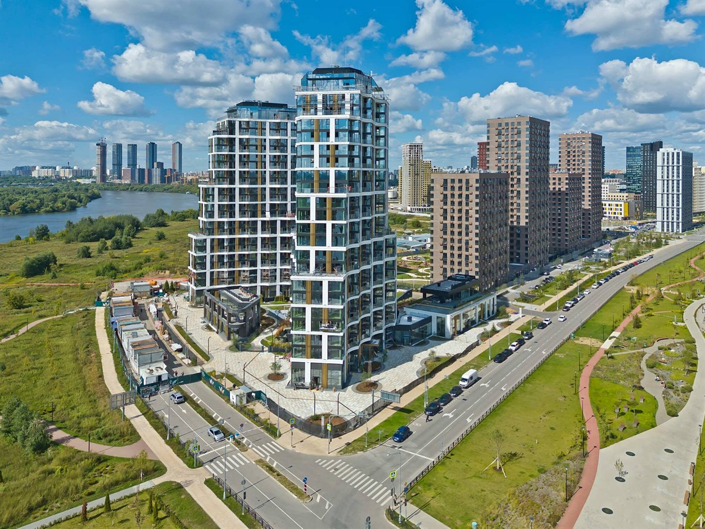
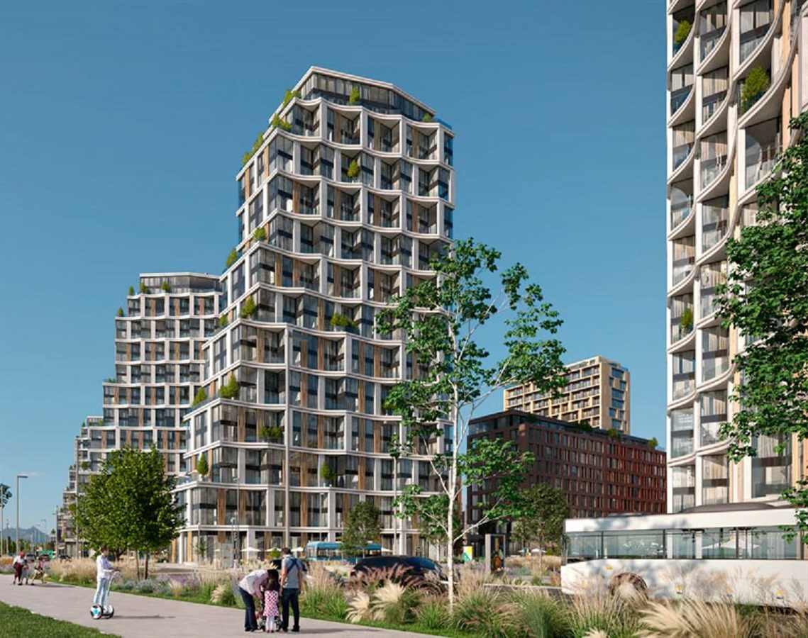
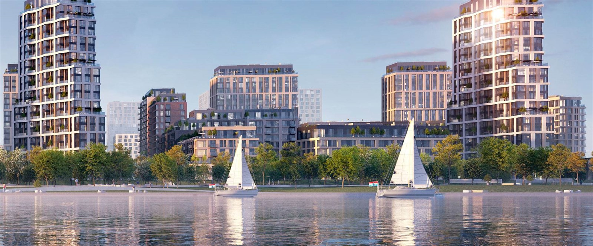

ЖК Клубный город на реке Primavera: купить квартиру у метро Спартак в Покровском-Стрешнево
Обновлено: 28 апреля 2026



Клубный город на реке Primavera — проект в районе Покровское-Стрешнево с акцентом на приватный формат жизни, близость к воде и понятную транспортную связку через метро «Спартак». Страница подготовлена под коммерческий интент: здесь собраны фактические параметры проекта, диапазоны цен, структура лотов и прикладный алгоритм покупки без лишней теории.
Ключевые параметры
- Название: ЖК «Клубный город на реке Primavera»
- Район: Москва, СЗАО, Покровское-Стрешнево
- Адрес: Волоколамское шоссе, вл. 71/12, корпус 22
- Метро: «Спартак», около 12 минут пешком
- Застройщик: Стадион Спартак
- Класс: уточняется (по позиционированию — клубный формат)
- Тип дома: кирпично-монолитный
- Этажность: до 22 этажей
- Корпусов: 17
- Лотов в продаже: 372
- Площадь квартир: 40,6–344,8 м²
- Отделка: черновая
- Форма оплаты: ипотека
Цены и планировки
Проект сформирован в среднем и верхнем ценовом сегменте района: старт входа выше массового рынка, при этом структура лотов покрывает как компактные семейные сценарии, так и крупные форматы для покупателей, которым важны площадь и приватность. Для принятия решения смотрите не только «цену от», но и полную модель сделки: стоимость лота, будущие затраты на ремонт, финансовую нагрузку и срок входа.
| Тип | Площадь | Цена от | Лотов |
|---|---|---|---|
| 1-комн | 40,6–99,9 м² | от 28,8 млн ₽ | 77 |
| 2-комн | 63,1–139,6 м² | от 40,7 млн ₽ | 99 |
| 3-комн | 77,2–171,6 м² | от 54,0 млн ₽ | 43 |
| 4+ комн | 142,9–344,8 м² | от 117,8 млн ₽ | 8 |
По текущему пулу лотов общий ценовой диапазон составляет примерно 28,8–449,1 млн ₽. Ориентир по цене за м² — 644 500–1 302 600 ₽ в зависимости от корпуса, площади, этажа и конкретного продукта. Перед бронью полезно сравнить 3–5 лотов внутри одного бюджета: это позволяет быстро увидеть, где цена объясняется характеристиками, а где — только маркетингом.
О жилом комплексе
Primavera развивает сценарий «город у воды» в северо-западной части Москвы. Для проекта характерны клубный формат, акцент на архитектурную среду и премиальные по площади решения в старших форматах. По карточке проекта предусмотрена черновая отделка, что важно учитывать на этапе финансового планирования: фактический бюджет владения формируется не только ценой покупки, но и объёмом последующей отделки.
С позиции продукта ключевой плюс — сочетание локации, масштаба и продуктовой линейки: в одном проекте доступны как более компактные квартиры, так и крупные лоты для семейного проживания. Это делает комплекс интересным для покупателей с разными сценариями покупки, но требует внимательной фильтрации по этажности, сторонам света и итоговой смете.
Инфраструктура и транспорт
Район Покровское-Стрешнево стабильно привлекает спросом на «водные» и парково-рекреационные локации, при этом транспортная часть для проекта опирается на метро «Спартак» (около 12 минут пешком) и магистральную связку через Волоколамское направление. Для покупателя это означает баланс между приватным форматом и городской доступностью.
Перед покупкой желательно провести живую проверку маршрута в рабочие часы: путь до метро, пробочность автомобильного сценария и время до ключевых точек вашей повседневной логистики. Это помогает избежать переоценки локации и выбрать лот, который будет удобен не только на презентации, но и в реальном режиме.
Корпуса и сроки сдачи
| Корпус | Очередь | Срок сдачи | Технология |
|---|---|---|---|
| Корпуса проекта (17) | Поэтапно | Статус: сдан, уточнения по корпусам — у менеджера | Кирпично-монолитный |
| Детализация по каждому корпусу | Уточняется | Уточняется | Уточняется |
Кому подходит / Кому может не подойти
Подходит:
- Покупателям, которым важны локация у воды и формат клубной жилой среды.
- Семьям, выбирающим функциональные 2–4-комнатные решения с запасом по площади.
- Клиентам, которые готовы инвестировать в отделку и хотят собрать интерьер под себя.
Может не подойти:
- Тем, кто ищет минимальный бюджет входа в новостройку рядом с метро.
- Покупателям без резерва на ремонт после получения ключей.
- Тем, кому критичен полностью готовый формат «заехал и живи» без дополнительного этапа работ.
Риски при покупке и как их снять
- Фокус только на цене входа. Снимайте риск полным расчетом: покупка + отделка + резерв.
- Неполная проверка конкретного лота. Проверяйте этаж, виды, инсоляцию и планировочную логику.
- Договорные детали. До аванса сверяйте порядок передачи, перечень работ и финальную площадь.
- Ипотечная нагрузка. Тестируйте платеж в консервативном сценарии дохода.
- Ожидания по срокам. Сверяйте фактический статус и документы по конкретному корпусу.
Пошагово: как купить квартиру в этом ЖК
- Фиксируете цель покупки: для жизни, семейного расширения или инвестиции.
- Определяете бюджет сделки и комфортный ежемесячный платеж.
- Собираете shortlist из 3–5 релевантных лотов в ЖК Primavera.
- Сравниваете параметры квартир: площадь, этаж, вид, цена за м² и итоговая стоимость владения.
- Проверяете документы проекта и условия по конкретному лоту.
- Выбираете схему оплаты (ипотека/комбинированный сценарий) и фиксируете бронь.
- Проходите сделку и приемку с контролем сроков и чек-листа качества.
FAQ
Какая минимальная цена квартиры в ЖК Primavera?
По текущей выборке старт цены начинается от 28,8 млн ₽.
Сколько лотов в продаже?
В проекте представлено 372 лота с разной площадью и конфигурациями.
Есть ли студии в проекте?
В текущем пуле лотов студии отсутствуют, основной фокус — 1-комн и более крупные форматы.
Какой диапазон площадей по квартирам?
Ориентир по площади: от 40,6 до 344,8 м² в зависимости от типа квартиры.
На каком расстоянии метро?
По карточке проекта — около 12 минут пешком до станции «Спартак».
Какие варианты оплаты доступны?
По текущим данным доступен ипотечный сценарий оплаты, дополнительные условия уточняются.
Какая отделка в квартирах?
Заявлена черновая отделка, поэтому бюджет ремонта стоит закладывать заранее.
Как быстро принять решение без ошибки?
Сравнить несколько лотов в одном бюджете, проверить документы и пройти живой тест локации до брони.
CTA: подобрать квартиры в ЖК Primavera под ваш бюджет
Подготовим персональный shortlist, сравним условия покупки, проверим риски по документам и сопроводим сделку до передачи ключей.
Телефон: +7 985 761-48-85
Telegram: @AlexSavushkin